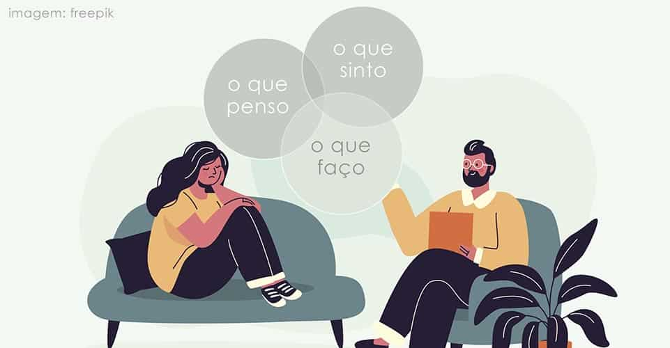

Psicologia Comportamental
A Psicologia Comportamental está mais presente no nosso dia a dia do que a gente imagina. Essa abordagem parte do princípio de que todo comportamento é aprendido e, por isso, pode ser modificado com o tempo e com as estratégias certas. Isso significa que hábitos, reações e atitudes que temos hoje foram reforçados de alguma forma — e também podem ser transformados.

Um exemplo simples está em hábitos de organização. Se toda vez que uma pessoa arruma sua mesa ela sente uma sensação de bem-estar ou recebe um elogio, esse comportamento tende a se repetir. Isso é o que chamamos de reforço positivo — um dos conceitos centrais da psicologia comportamental. Outro exemplo é no controle de impulsos ou emoções. Imagine alguém que sente muita raiva no trânsito. Ao aprender a respirar fundo e responder de forma diferente a essa raiva (em vez de gritar ou buzinar), a pessoa está aplicando, na prática, uma modificação de comportamento. Ela aprendeu uma nova forma de lidar com aquela situação.
Também usamos essa abordagem com crianças, quando ensinamos que determinados comportamentos (como guardar os brinquedos ou falar com respeito) trazem consequências positivas. Isso cria um aprendizado claro de causa e efeito, ajudando na educação e no desenvolvimento emocional.